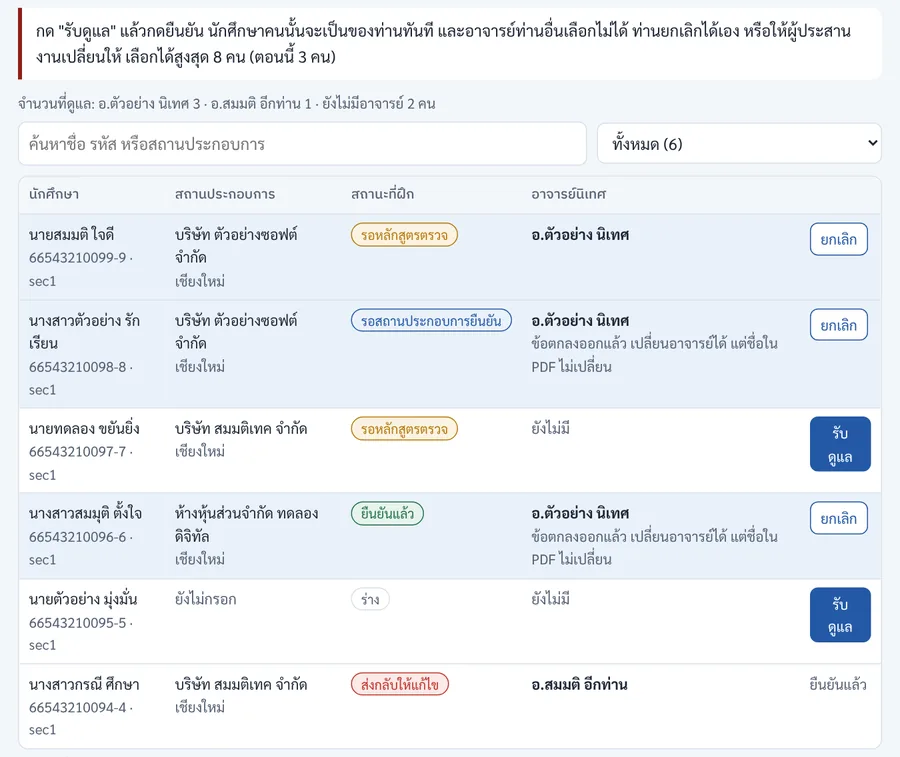
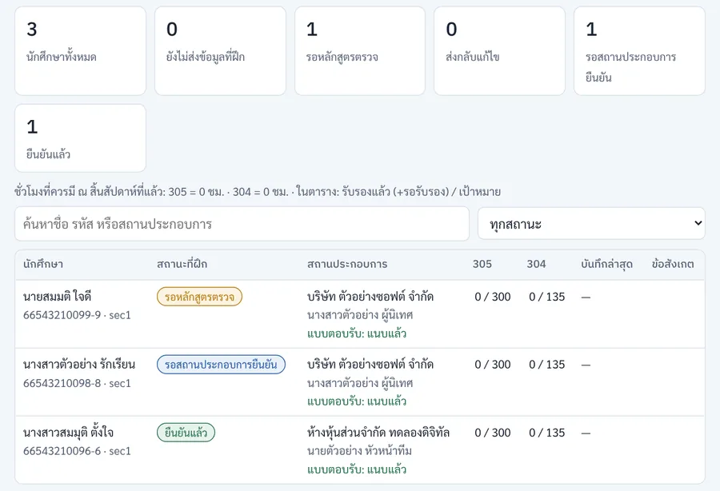
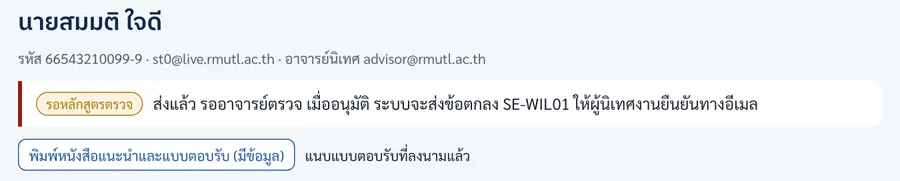
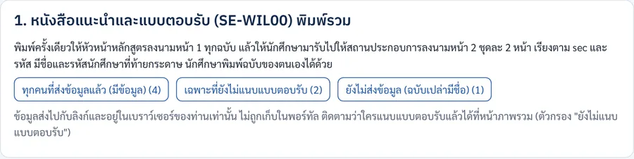
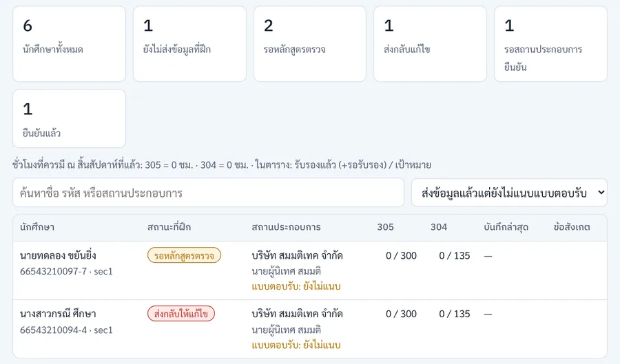
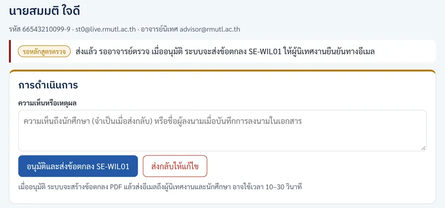
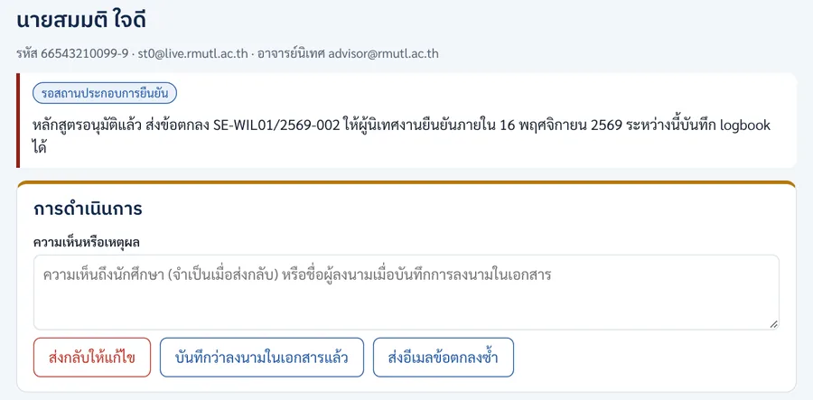
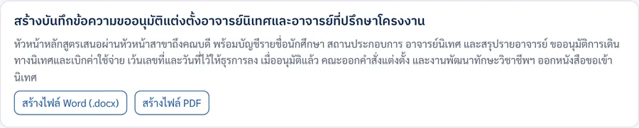

เส้นทางอาจารย์ช่วงเริ่มต้น: จากข้อมูลที่ฝึกถึงคำสั่งแต่งตั้ง
แผนภาพทีละขั้นก่อนเปิดภาค: ตรวจและอนุมัติข้อมูลที่ฝึก จับคู่อาจารย์นิเทศ หนังสือแนะนำ ข้อตกลง และบันทึกขออนุมัติแต่งตั้ง ใครทำ ทำที่ไหน ภายในเมื่อไร

ฉบับ 1.1 · 14 พฤศจิกายน 2569 · ภาพหน้าจอทุกภาพใช้ข้อมูลสมมติ
1. ดูเฉพาะงานของท่าน
อาจารย์นิเทศใช้บทบาท teacher ในระบบ ส่วนการอนุมัติ ส่งกลับ บันทึกการลงนาม และแท็บ "เอกสาร" ทำได้เฉพาะผู้ประสานงาน (บทบาท admin) เลือกบทบาทเพื่อเน้นขั้นที่เป็นของท่าน ขั้นอื่นจะจางลงแต่ยังเห็นลำดับทั้งหมด
2. ภาพรวมทั้งเส้นทาง
- เพิ่มอาจารย์ในระบบ
- อาจารย์เข้าระบบ SE-WIL
- นักศึกษาส่งข้อมูลที่ฝึกภายใน 13 พ.ย. 69
- ตรวจข้อมูลและบริษัท
- เลือกนักศึกษาที่จะดูแลภายใน 14 พ.ย. 69
- ดูข้อมูลนักศึกษาที่ดูแล
- ลงนามหนังสือแนะนำ SE-WIL00
- ติดตามแบบตอบรับที่ลงนามภายใน 16 พ.ย. 69
- อนุมัติ ระบบส่งข้อตกลง SE-WIL01ภายใน 14 พ.ย. 69
- ลงนามข้อตกลงครบ บันทึกในระบบภายใน 16 พ.ย. 69
- เสนอคณะแต่งตั้งอาจารย์นิเทศภายใน 17 พ.ย. 69
- เปิดภาค16 พ.ย. 69
สถานะข้อมูลที่ฝึกของนักศึกษาในระบบ
ผู้ประสานงานส่งกลับได้ระหว่าง รอหลักสูตรตรวจ และ รอสถานประกอบการยืนยัน สถานะจะเป็น ส่งกลับให้แก้ไข เมื่อนักศึกษาแก้แล้วส่งใหม่ ข้อตกลงยังใช้เลขที่เดิม
เตรียมระบบ และรับข้อมูลจากนักศึกษา
- 1
เพิ่มชื่ออาจารย์ในระบบ
ใส่อีเมล @rmutl.ac.th และชื่อของอาจารย์ในชีต Users บทบาท teacher (อีเมลเดียวต่อหนึ่งแถว) แล้วแจ้งอาจารย์ว่าเข้าระบบได้ที่ rmutl.link/sewil
- 2
เข้าระบบ SE-WIL ด้วยอีเมลมหาวิทยาลัย
ใส่อีเมล @rmutl.ac.th แล้วกด "ส่งลิงก์เข้าระบบ" เปิดลิงก์ในอีเมล ไม่ต้องใช้รหัสผ่าน ระบบจำเครื่องไว้ 14 วัน
หน้าแรกคือ นักศึกษาของฉัน แสดงเฉพาะนักศึกษาที่ท่านเป็นอาจารย์นิเทศ ตามหลักการเข้าถึงข้อมูลเท่าที่จำเป็น ก่อนเลือกนักศึกษาหน้านี้จะว่าง
ไม่ได้รับอีเมลเข้าระบบ
ดูโฟลเดอร์ Junk หรือ Quarantine ของ Outlook ถ้ายังไม่มี แจ้งผู้ประสานงานให้ตรวจว่ามีอีเมลของท่านในชีต Users

หน้าเข้าระบบ (ใช้หน้าเดียวกับนักศึกษา) - 3
นักศึกษาส่งข้อมูลที่ฝึก
มี 2 แบบ: กรณี A บริษัทตกลงรับแล้ว นักศึกษากรอกและส่งให้ตรวจก่อน แล้วจึงพิมพ์แบบตอบรับไปลงนาม · กรณี B บริษัทยังไม่แน่ใจ นักศึกษานำหนังสือแนะนำที่หัวหน้าหลักสูตรลงนามไปสมัครก่อน แล้วกรอกข้อมูลพร้อมแนบแบบตอบรับ อ่านขั้นของนักศึกษาได้ที่เส้นทางช่วงเริ่มต้นของนักศึกษา
- 4
ตรวจข้อมูลที่ฝึกและสถานประกอบการ
ในหน้าภาพรวม กดชื่อนักศึกษาที่สถานะ รอหลักสูตรตรวจ อ่านตำแหน่งงาน ลักษณะงาน โจทย์โครงงาน และตรวจสอบบริษัทคร่าว ๆ ถ้าต้องแก้ ใส่เหตุผลแล้วกด ส่งกลับให้แก้ไข นักศึกษาจะได้อีเมลพร้อมเหตุผล
ถ้าข้อมูลถูกต้อง แจ้งนักศึกษาให้พิมพ์แบบตอบรับไปลงนามได้ (กรณี A) และอนุมัติเมื่อได้แบบตอบรับแล้ว (ขั้นที่ 9)
จับคู่อาจารย์นิเทศ
- 5
เลือกนักศึกษาที่จะดูแล
แท็บ จับคู่อาจารย์นิเทศ กด รับดูแล แล้วกดยืนยัน นักศึกษาคนนั้นเป็นของท่านทันที อาจารย์ท่านอื่นเลือกซ้ำไม่ได้ ยกเลิกเองได้
- อาจารย์นิเทศเป็นที่ปรึกษาโครงงาน ENGSE304 ของนักศึกษาคนเดียวกันด้วย
- เลือกนักศึกษาที่อยู่สถานประกอบการเดียวกัน นิเทศครั้งเดียวพบได้หลายคน ดูแลไม่เกิน 8 คน
- ผู้ประสานงานกำหนดหรือเปลี่ยนอาจารย์ให้ได้ และปิดการเลือกเองได้เมื่อจับคู่ครบ
ต้องเปลี่ยนอาจารย์หลังข้อตกลงออกแล้ว
เปลี่ยนในระบบได้ แต่ชื่ออาจารย์ใน PDF ข้อตกลงที่ส่งไปแล้วไม่เปลี่ยนตาม ผู้ประสานงานแจ้งสถานประกอบการเองถ้าจำเป็น

แท็บจับคู่อาจารย์นิเทศ - 6
ดูข้อมูลนักศึกษาที่ท่านดูแล
หน้า นักศึกษาของฉัน แสดงสถานะ สถานประกอบการ ผู้นิเทศงาน และว่าแนบแบบตอบรับแล้วหรือยัง กดชื่อเพื่อดูข้อมูลที่ฝึกเต็ม เปิดแบบตอบรับที่แนบ และพิมพ์หนังสือแนะนำของนักศึกษาที่ท่านดูแลได้
เบอร์โทรของนักศึกษาและผู้นิเทศงานในหน้านี้ใช้เพื่อการฝึกเท่านั้น ห้ามส่งต่อ

หน้านักศึกษาของฉัน 
หน้ารายละเอียดนักศึกษา
หนังสือแนะนำ แบบตอบรับ และข้อตกลง
- 7
หัวหน้าหลักสูตรลงนามหนังสือแนะนำ SE-WIL00 หน้า 1
ทำได้ 2 แบบ
- พิมพ์รวม: แท็บ เอกสาร หัวข้อ 1 ผู้ประสานงานพิมพ์ทุกฉบับครั้งเดียว (มีข้อมูล · เฉพาะที่ยังไม่แนบแบบตอบรับ · ฉบับเปล่ามีชื่อ) ให้หัวหน้าหลักสูตรลงนามรวด แล้วนักศึกษามารับ
- รายคน: นักศึกษาพิมพ์เองแล้วนำมาให้ลงนาม หรือส่ง PDF ให้ลงนาม

แท็บเอกสาร: พิมพ์รวม 3 กลุ่ม - 8
ติดตามแบบตอบรับที่สถานประกอบการลงนาม
ทุกคนต้องแนบแบบตอบรับ แม้ฝึกที่เดิม ในหน้าภาพรวมเลือกตัวกรอง ส่งข้อมูลแล้วแต่ยังไม่แนบแบบตอบรับ จะเห็นรายชื่อที่ต้องตาม คอลัมน์สถานประกอบการบอก "แบบตอบรับ: แนบแล้ว / ยังไม่แนบ"
การแนบแบบตอบรับไม่บังคับก่อนอนุมัติ แต่แนะนำให้อนุมัติเมื่อได้แบบตอบรับแล้ว

ตัวกรอง "ยังไม่แนบแบบตอบรับ" - 9
อนุมัติ แล้วระบบส่งข้อตกลง SE-WIL01
ในหน้ารายละเอียดนักศึกษา กด อนุมัติและส่งข้อตกลง SE-WIL01 ระบบสร้างข้อตกลง PDF (3 หน้า พร้อมตารางปฏิทินกิจกรรม) และไฟล์ปฏิทินกำหนดการ (.ics) แล้วส่งอีเมลถึงครบทั้ง 3 ฝ่าย ได้แก่ ผู้นิเทศงาน นักศึกษา และอาจารย์นิเทศทันที (หากต้องการปรับปรุง PDF ภายหลัง สามารถกดปุ่ม อนุมัติและส่งข้อตกลง SE-WIL01 (สร้าง PDF ใหม่) หรือ สร้างเฉพาะไฟล์ PDF ใหม่ (ไม่ส่งอีเมล) ได้ทันที)
หลังขั้นนี้ สถานะเป็น รอสถานประกอบการยืนยัน นักศึกษาบันทึก logbook ได้
การ์ดการดำเนินการ (เฉพาะผู้ประสานงาน) - 10
ลงนามข้อตกลงครบทุกฝ่าย แล้วบันทึกในระบบ
- ผู้นิเทศงานกดยืนยันผ่านลิงก์ในอีเมล สถานะเปลี่ยนเป็น ยืนยันแล้ว เอง
- ถ้าลงนามในเอกสารฉบับพิมพ์ (เรียงลำดับ: 1. หัวหน้าหลักสูตรลงนาม → 2. นักศึกษาลงนาม → 3. ผู้แทนสถานประกอบการลงนาม เก็บฉบับจริงที่บริษัท 1 ชุด สำเนานักศึกษา 1 ชุด และส่งสำเนาคืนหลักสูตร 1 ชุด) เมื่อได้สำเนาที่ลงนามครบ ผู้ประสานงานใส่ชื่อผู้ลงนามในช่องความเห็น แล้วกด บันทึกว่าลงนามในเอกสารแล้ว
- ผู้นิเทศงานไม่ได้รับอีเมล: ตรวจอีเมลที่นักศึกษากรอก แล้วกด ส่งอีเมลข้อตกลงซ้ำ

ปุ่มเมื่อสถานะรอสถานประกอบการยืนยัน - 11
เสนอคณะแต่งตั้งอาจารย์นิเทศ และตรวจความพร้อม
แท็บ เอกสาร หัวข้อ 2 ตรวจความพร้อมของข้อมูล แล้วสร้างบันทึกข้อความขออนุมัติแต่งตั้งอาจารย์นิเทศและอาจารย์ที่ปรึกษาโครงงาน (Word หรือ PDF) เสนอผ่านหัวหน้าสาขาถึงคณบดี คณะออกคำสั่งแต่งตั้งเอง ใช้ทำงบเบิกค่าเดินทางและหนังสือขอเข้านิเทศ
ตรวจหน่วยกิตขั้นต่ำรายคนและความคุ้มครองประกันอุบัติเหตุในช่วงเดียวกัน

สร้างบันทึกขออนุมัติแต่งตั้ง - 12
เปิดภาค
นักศึกษารายงานตัวและเริ่มบันทึก logbook ผู้ประสานงานจัดปฐมนิเทศ อาจารย์นิเทศนัดพบนักศึกษาที่ดูแลครั้งแรก
3. สรุป: งานของอาจารย์ก่อนเปิดภาค
| งาน | ใครทำ | ภายใน | ทำที่ไหน |
|---|---|---|---|
| ตรวจข้อมูลที่ฝึก ส่งกลับถ้าต้องแก้ | ผู้ประสานงาน | ทยอยเมื่อนักศึกษาส่ง | ระบบ SE-WIL หน้ารายละเอียดนักศึกษา |
| เลือกนักศึกษาที่จะดูแล | อาจารย์นิเทศ | วันเสาร์ที่ 14 พฤศจิกายน 2569 | แท็บ "จับคู่อาจารย์นิเทศ" |
| ลงนามหนังสือแนะนำ SE-WIL00 หน้า 1 | หัวหน้าหลักสูตร | ก่อนนักศึกษานำไปให้บริษัท | แท็บ "เอกสาร" พิมพ์รวม หรือรายคน |
| อนุมัติข้อมูลที่ฝึก (ระบบส่ง SE-WIL01) | ผู้ประสานงาน | วันเสาร์ที่ 14 พฤศจิกายน 2569 | หน้ารายละเอียดนักศึกษา |
| ติดตามแบบตอบรับที่ลงนาม | ผู้ประสานงาน อาจารย์นิเทศ | วันจันทร์ที่ 16 พฤศจิกายน 2569 | หน้าภาพรวม ตัวกรอง "ยังไม่แนบแบบตอบรับ" |
| ลงนามข้อตกลง SE-WIL01 / บันทึกการลงนาม | หัวหน้าหลักสูตร / ผู้ประสานงาน | วันจันทร์ที่ 16 พฤศจิกายน 2569 | เอกสาร และปุ่ม "บันทึกว่าลงนามในเอกสารแล้ว" |
| บันทึกขออนุมัติแต่งตั้ง หน่วยกิต ประกันอุบัติเหตุ | ผู้ประสานงาน | วันอังคารที่ 17 พฤศจิกายน 2569 | แท็บ "เอกสาร" หัวข้อ 2 |
4. ถ้าเกิดกรณีเหล่านี้
ข้อมูลในแบบตอบรับที่บริษัทลงนามไม่ตรงกับในระบบ
ยึดฉบับที่บริษัทลงนาม (ถ้าแก้ด้วยปากกาและลงนามกำกับ) ส่งข้อมูลในระบบกลับให้นักศึกษาแก้ให้ตรง แล้วอนุมัติใหม่ ข้อตกลงใช้เลขที่เดิม
นักศึกษาขอเปลี่ยนที่ฝึกหลังอนุมัติแล้ว
ให้แจ้งผู้ประสานงานก่อน การเปลี่ยนหรือยุติการฝึกต้องผ่านหัวหน้าหลักสูตรร่วมกับกรรมการบริหารหลักสูตร
อาจารย์ต้องการเปลี่ยนนักศึกษาที่ดูแล
ถ้าการเลือกเองยังเปิดอยู่ กด "ยกเลิก" แล้วเลือกใหม่ ถ้าปิดแล้ว แจ้งผู้ประสานงานให้เปลี่ยนให้ ก่อนออกบันทึกขออนุมัติแต่งตั้ง
สถานประกอบการยังไม่ยืนยันข้อตกลงใกล้กำหนด
ให้นักศึกษาเตือนผู้นิเทศงาน ตรวจอีเมลที่กรอก กด "ส่งอีเมลข้อตกลงซ้ำ" หรือใช้การลงนามในเอกสารแล้วบันทึกในระบบ